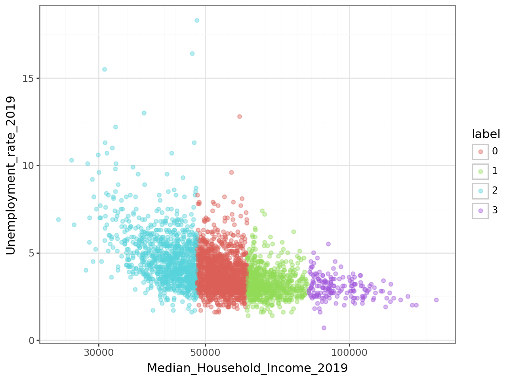
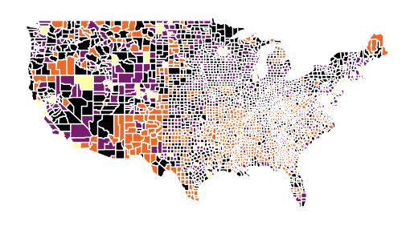
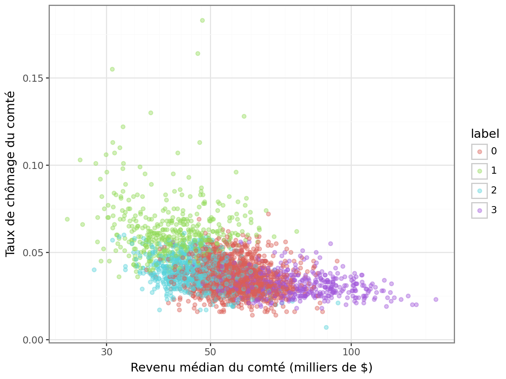
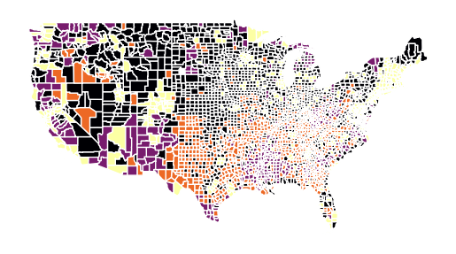
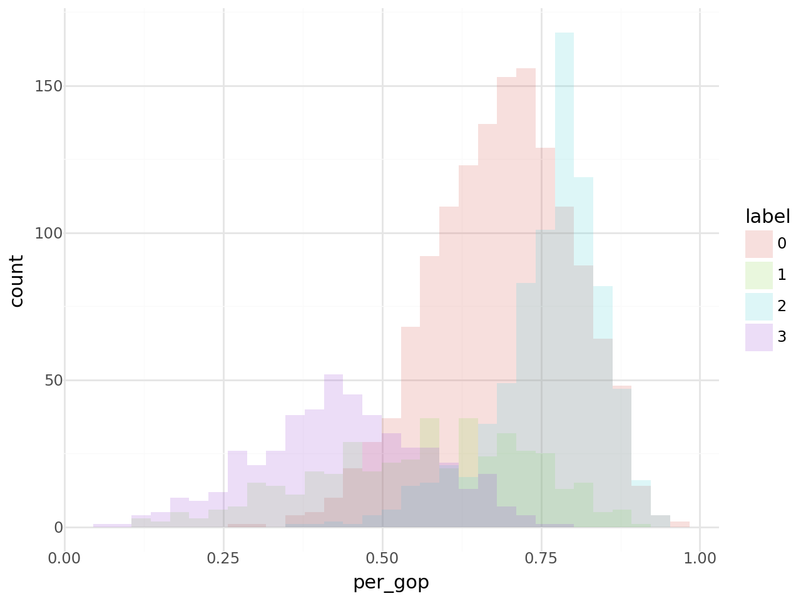
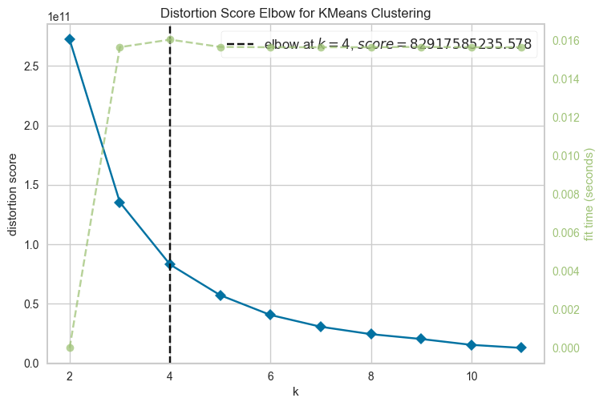
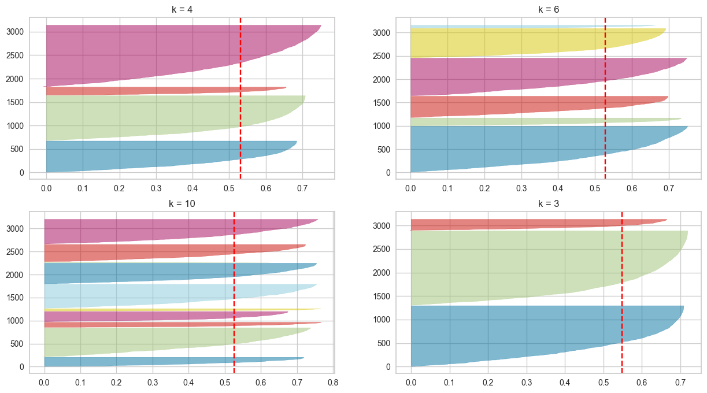
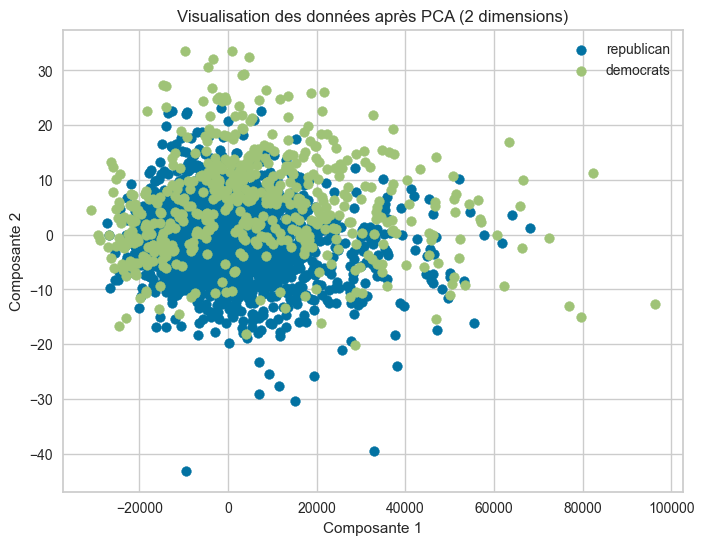

!pip install plotnineimport pandas as pd
import plotnine as p9
import matplotlib.pyplot as plt
from sklearn.cluster import KMeans # pour kmeans
from sklearn.preprocessing import StandardScaler
from sklearn.pipeline import make_pipelineimport requests
url = "https://raw.githubusercontent.com/linogaliana/python-datascientist/main/content/modelisation/get_data.py"
r = requests.get(url, allow_redirects=True)
open("getdata.py", "wb").write(r.content)
import getdata
votes = getdata.create_votes_dataframes()
votes.head(1)| STATEFP | COUNTYFP | COUNTYNS | AFFGEOID | GEOID | NAME | LSAD | ALAND | AWATER | geometry | ... | share_2008_democrat | share_2008_other | share_2008_republican | share_2012_democrat | share_2012_other | share_2012_republican | share_2016_democrat | share_2016_other | share_2016_republican | winner | |
|---|---|---|---|---|---|---|---|---|---|---|---|---|---|---|---|---|---|---|---|---|---|
| 0 | 29 | 227 | 00758566 | 0500000US29227 | 29227 | Worth | 06 | 690564983 | 493903 | POLYGON ((-94.63203 40.57176, -94.53388 40.570... | ... | 0.363714 | 0.034072 | 0.602215 | 0.325382 | 0.041031 | 0.633588 | 0.186424 | 0.041109 | 0.772467 | republican |
1 rows × 383 columns
# # 1.1 Chargement de la base restreinte.
xvars = [
"Unemployment_rate_2019",
"Median_Household_Income_2019",
"Percent of adults with less than a high school diploma, 2015-19",
"Percent of adults with a bachelor's degree or higher, 2015-19",
]
df2 = votes[xvars + ["per_gop"]].dropna()
# 1.2. kmeans avec k=4
model = KMeans(n_clusters=4)
model.fit(df2[xvars])
# 1.3. Création de la variable label dans votes
votes["label"] = model.labels_
# votes['label'].head()
# 1.4. Carte de la typologie
p = votes.plot(column="label", cmap="inferno")
p.set_axis_off()
# 1.5. Nuage de points de 2 variables et coloration selon le label
votes["label"] = pd.Categorical(votes["label"])
p = (
p9.ggplot(votes)
+ p9.geom_point(
p9.aes(
x="Median_Household_Income_2019", y="Unemployment_rate_2019", color="label"
),
alpha=0.4,
)
+ p9.theme_bw()
+ p9.scale_x_log10()
)
"""
==> La classification apparaît un peu trop nettement dans cette figure. Cela suggère que la variable de revenu (Median_Household_Income_2019) explique un peu trop bien le partitionnement produit par notre modèle pour que ce soit normal. C’est probablement le fait de la variance forte du revenu par rapport aux autres variables. Dans ce type de sitution, comme cela a été évoqué, il est recommandé de standardiser les variables.
"""
p9.ggsave(p, 'img/featured_clustering.png')
pC:\Users\dmarin\AppData\Local\Programs\Python\Python311\Lib\site-packages\plotnine\ggplot.py:615: PlotnineWarning: Saving 6.4 x 4.8 in image.
C:\Users\dmarin\AppData\Local\Programs\Python\Python311\Lib\site-packages\plotnine\ggplot.py:616: PlotnineWarning: Filename: img/featured_clustering.png

# # Exercice 1 avec standardisation des variables
kmeans = make_pipeline(StandardScaler(), KMeans(n_clusters=4, random_state=123))
kmeans.fit(df2)
votes["label"] = kmeans.predict(df2)
p = votes.plot(column="label", cmap="inferno")
p.set_axis_off()
votes["label"] = pd.Categorical(votes["label"])
"""
==> Nuage de points moins déterministe
"""
(
p9.ggplot(votes)
+ p9.geom_point(
p9.aes(
x="Median_Household_Income_2019/1000",
y="Unemployment_rate_2019/100",
color="label",
),
alpha=0.4,
)
+ p9.theme_bw()
+ p9.scale_x_log10()
# + p9.scale_y_continuous(labels=percent_format())
+ p9.labs(x="Revenu médian du comté (milliers de $)", y="Taux de chômage du comté")
)

# # 1.7 Distribution du vote pour chaque cluster:
plt.figure()
p2 = (
p9.ggplot(votes)
+ p9.geom_histogram(p9.aes(x="per_gop", fill="label"), alpha=0.2, position="identity")
+ p9.theme_minimal()
)
p2C:\Users\dmarin\AppData\Local\Programs\Python\Python311\Lib\site-packages\plotnine\stats\stat_bin.py:109: PlotnineWarning: 'stat_bin()' using 'bins = 31'. Pick better value with 'binwidth'.
<Figure size 640x480 with 0 Axes># # Scores de clustering
!pip install yellowbrickCollecting yellowbrick
Downloading yellowbrick-1.5-py3-none-any.whl (282 kB)
-------------------------------------- 282.6/282.6 kB 2.9 MB/s eta 0:00:00
Requirement already satisfied: matplotlib!=3.0.0,>=2.0.2 in c:\users\dmarin\appdata\local\programs\python\python311\lib\site-packages (from yellowbrick) (3.9.2)
Requirement already satisfied: scipy>=1.0.0 in c:\users\dmarin\appdata\local\programs\python\python311\lib\site-packages (from yellowbrick) (1.14.1)
Requirement already satisfied: scikit-learn>=1.0.0 in c:\users\dmarin\appdata\local\programs\python\python311\lib\site-packages (from yellowbrick) (1.5.2)
Requirement already satisfied: numpy>=1.16.0 in c:\users\dmarin\appdata\local\programs\python\python311\lib\site-packages (from yellowbrick) (2.1.2)
Requirement already satisfied: cycler>=0.10.0 in c:\users\dmarin\appdata\local\programs\python\python311\lib\site-packages (from yellowbrick) (0.12.1)
Requirement already satisfied: contourpy>=1.0.1 in c:\users\dmarin\appdata\local\programs\python\python311\lib\site-packages (from matplotlib!=3.0.0,>=2.0.2->yellowbrick) (1.3.0)
Requirement already satisfied: fonttools>=4.22.0 in c:\users\dmarin\appdata\local\programs\python\python311\lib\site-packages (from matplotlib!=3.0.0,>=2.0.2->yellowbrick) (4.54.1)
Requirement already satisfied: kiwisolver>=1.3.1 in c:\users\dmarin\appdata\local\programs\python\python311\lib\site-packages (from matplotlib!=3.0.0,>=2.0.2->yellowbrick) (1.4.7)
Requirement already satisfied: packaging>=20.0 in c:\users\dmarin\appdata\local\programs\python\python311\lib\site-packages (from matplotlib!=3.0.0,>=2.0.2->yellowbrick) (24.1)
Requirement already satisfied: pillow>=8 in c:\users\dmarin\appdata\local\programs\python\python311\lib\site-packages (from matplotlib!=3.0.0,>=2.0.2->yellowbrick) (11.0.0)
Requirement already satisfied: pyparsing>=2.3.1 in c:\users\dmarin\appdata\local\programs\python\python311\lib\site-packages (from matplotlib!=3.0.0,>=2.0.2->yellowbrick) (3.2.0)
Requirement already satisfied: python-dateutil>=2.7 in c:\users\dmarin\appdata\local\programs\python\python311\lib\site-packages (from matplotlib!=3.0.0,>=2.0.2->yellowbrick) (2.9.0.post0)
Requirement already satisfied: joblib>=1.2.0 in c:\users\dmarin\appdata\local\programs\python\python311\lib\site-packages (from scikit-learn>=1.0.0->yellowbrick) (1.4.2)
Requirement already satisfied: threadpoolctl>=3.1.0 in c:\users\dmarin\appdata\local\programs\python\python311\lib\site-packages (from scikit-learn>=1.0.0->yellowbrick) (3.5.0)
Requirement already satisfied: six>=1.5 in c:\users\dmarin\appdata\local\programs\python\python311\lib\site-packages (from python-dateutil>=2.7->matplotlib!=3.0.0,>=2.0.2->yellowbrick) (1.16.0)
Installing collected packages: yellowbrick
Successfully installed yellowbrick-1.5
[notice] A new release of pip available: 22.3.1 -> 24.3.1
[notice] To update, run: C:\Users\dmarin\AppData\Local\Programs\Python\Python311\python.exe -m pip install --upgrade pipfrom yellowbrick.cluster import KElbowVisualizer
# # Visualisation du coude:
visualizer = KElbowVisualizer(model, k=(2, 12))
visualizer.fit(df2.loc[:, xvars]) # Fit the data to the visualizer
visualizer.show()
# # Visualisation du score de silhouette:
from yellowbrick.cluster import SilhouetteVisualizer
fig, ax = plt.subplots(2, 2, figsize=(15, 8))
j = 0
for i in [3, 4, 6, 10]:
j += 1
"""
Create KMeans instance for different number of clusters
"""
km = KMeans(
n_clusters=i, init="k-means++", n_init=10, max_iter=100, random_state=42
)
q, mod = divmod(j, 2)
"""
Create SilhouetteVisualizer instance with KMeans instance
Fit the visualizer
"""
visualizer = SilhouetteVisualizer(km, colors="yellowbrick", ax=ax[q - 1][mod])
ax[q - 1][mod].set_title("k = " + str(i))
visualizer.fit(df2[xvars])
fig.savefig('img/silhouette-yellowbrick.png')
# # 3. PCA analysis:
from sklearn.decomposition import PCA
X = df2.drop(['per_gop'], axis=1)
y = votes['winner']
print('Dimensions des données avant PCA : {}'.format(X.shape))
n_components = 2
pca = PCA(n_components=n_components) # n_components entre 2 et le nombre de features (ici 5)
x_2d = pca.fit_transform(X)
print('Dimensions des données après PCA : {}'.format(x_2d.shape))
print('components:\t{}'.format(pca.components_))
print('variance expliquée par les {} premières composantes:\t{}'.format(n_components, pca.explained_variance_ratio_))
# # ==> 99.9% de la variance associée au jeu de données est représenté par al 1ère composante
# # Création d'un dataframe avec les données transformées:
columns=['Composante {}'.format(i) for i in range(1, n_components + 1)]
df_pca = pd.DataFrame(x_2d, columns=columns)
df_pca['classe'] = y
# # Visualiser les données PCA en 2D
plt.figure(figsize=(8, 6))
for classe in df_pca['classe'].unique():
subset = df_pca[df_pca['classe'] == classe]
plt.scatter(subset['Composante 1'], subset['Composante 2'], label=classe)
plt.title("Visualisation des données après PCA (2 dimensions)")
plt.xlabel("Composante 1")
plt.ylabel("Composante 2")
plt.legend()
plt.show()
df_pca.head()Dimensions des données avant PCA : (3107, 4)
Dimensions des données après PCA : (3107, 2)
components: [[-4.16490641e-05 9.99999862e-01 -2.23315106e-04 4.74024578e-04]
[-2.16554059e-02 -5.23215995e-04 -4.94476555e-01 8.68921001e-01]]
variance expliquée par les 2 premières composantes: [9.99999638e-01 2.52927770e-07]
| Composante 1 | Composante 2 | classe | |
|---|---|---|---|
| 0 | -10560.873563 | 5.295134 | republican |
| 1 | -5924.874925 | 1.809664 | republican |
| 2 | -5440.873517 | 4.020792 | republican |
| 3 | -15133.877609 | -1.519034 | democrats |
| 4 | -13077.873577 | 5.620736 | republican |
# # Choisir la bonne dimension:
# # n_components = dimension souhaitée ou valeur entre 0 et 1 indiquant la proportion de la variance que l'on souhaite conserver:
pca = PCA(n_components=0.95)
x_2d = pca.fit_transform(X)
print('components:\t{}'.format(pca.components_))
print('variance ratio:\t{}'.format(pca.explained_variance_ratio_))
# # ==> une seule composante nécessaire
components: [[-4.16490641e-05 9.99999862e-01 -2.23315106e-04 4.74024578e-04]]
variance ratio: [0.99999964]